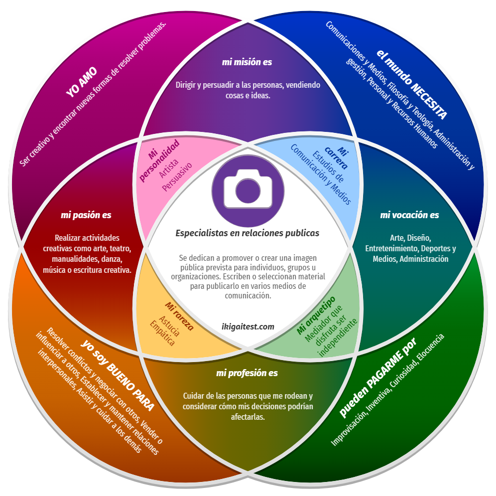

+


¡Bienvenidos! Soy una decodificadora de amplia formación y experiencia, resiliente, emprendedora y luchadora. Además, tengo el honor de ser esposa y madre de 5 hijos, roles que nutren mi vida y me impulsan a seguir adelante. Mi viaje en el mundo de la sanación comenzó con estudios de Psicología, ejercer el rol de Asistente Terapéutica de Jóvenes con otras capacidades y en el año 2014 conocí la biodecodificación, y algunos años más tarde, los registros akáshicos, una revelación que transformó mi perspectiva y marcó un punto de inflexión en mi vida. Me abrieron las puertas a un crecimiento personal profundo y duradero. Me brindaron una comprensión más profunda de mí misma y del universo que me rodea, otorgándome una guía invaluable para enfrentar desafíos, sanar heridas emocionales y avanzar hacia una vida más plena y consciente. Estas dos disciplinas, la biodecodificación y los registros akáshicos, no solo me han ayudado y enseñado en mi propio camino, sino que también me han permitido iluminar y aclarar los caminos de muchas otras personas. Mi propósito es compartir mis conocimientos y experiencias para ayudar a aquellos que buscan sanar, crecer y encontrar su camino hacia una vida más plena y consciente. Te invito a explorar este camino juntos, donde la sanación y el crecimiento son posibles para todos.
Ofrecemos una variedad de terapias para ayudarte en tu camino hacia el bienestar:
La Biodecodificación es una metodología que nos ayuda a comprender y liberar emociones atrapadas, promoviendo así nuestro bienestar emocional y físico.
En la Biodecodificación, se parte del principio de que nuestras emociones, experiencias y traumas no resueltos pueden manifestarse como enfermedades o dolencias físicas en nuestro cuerpo. A través de esta terapia, exploramos el origen emocional de nuestras dolencias y aprendemos a liberar esas emociones para facilitar la curación.
Entrevista: En la sesión, se realiza una entrevista detallada para explorar tus experiencias de vida, emociones y posibles eventos traumáticos que puedan estar relacionados con tu salud física o emocional.
Árbol Genealógico: Esta herramienta te permite visualizar y comprender la historia familiar, identificando patrones, conflictos y traumas que pueden estar influyendo en tu bienestar emocional. Al explorar tu árbol genealógico, podemos descubrir conexiones entre tu pasado familiar y tus experiencias actuales, proporcionando una comprensión más profunda de tus desafíos y ayudándote a encontrar caminos hacia la sanación.
Descodificación: Durante las sesiones, se utiliza un enfoque introspectivo para identificar y comprender las emociones atrapadas que pueden estar contribuyendo a tus síntomas físicos.
Terapia emocional: Se utilizan diversas técnicas para ayudarte a liberar estas emociones atrapadas de manera segura y efectiva, lo que puede incluir la expresión emocional, la visualización guiada o la terapia de conversación.
¡Experimenta una mejora integral en tu calidad de vida con la Biodecodificación! Con esta terapia, no solo abordamos los síntomas físicos, sino que también trabajamos en tu bienestar emocional y psicológico, lo que te permite alcanzar un estado de equilibrio y armonía en todos los aspectos de tu vida.
Sumérgete en las profundidades del conocimiento ancestral y accede a la sabiduría universal a través de la fascinante experiencia de la apertura de registros akáshicos.
Los Registros Akáshicos son una dimensión de información cósmica que contiene el registro de todas las experiencias, pensamientos y emociones de cada alma a lo largo del tiempo. Al abrir estos registros, te permites explorar tu propio ser en un nivel más profundo, descubriendo valiosos entendimientos y revelaciones que pueden guiar tu vida hacia una mayor plenitud y realización.
Sesión de Exploración: Durante la sesión, serás guiado para ayudarte a conectar con tus registros akáshicos. A través de técnicas de meditación y visualización, abrirás las puertas a tu propia sabiduría interior.
Conexión Profunda: Explora tus vidas pasadas, comprende los patrones recurrentes en tu vida actual y recibe orientación sobre cómo superar obstáculos y desafíos presentes.
Sanación y Transformación: Libera bloqueos emocionales y energéticos, experimenta una sensación renovada de claridad y propósito, y despierta a tu máximo potencial.
Descubre la maravillosa experiencia de la apertura de registros akáshicos y permite que tu esencia se envuelva en un abrazo de amor y comprensión. Conéctate con la profundidad de tu ser y déjate guiar por la sabiduría universal que reside en ti. En este viaje de autodescubrimiento, encontrarás el amor y la armonía que siempre has buscado.
Encuentra el flujo sanador de la energía universal y descubre el equilibrio y la armonía en todos los aspectos de tu ser.
La sanación energética te brinda la oportunidad de liberar bloqueos, restaurar la vitalidad y revitalizar tu ser a nivel físico, emocional y espiritual.
Te ofrezco sesiones de sanación energética también para diversos espacios físicos, incluyendo hogares, negocios, oficinas, talleres y otros lugares, con el fin de armonizar y revitalizar el ambiente.
Además, brindamos la oportunidad de aprender técnicas de sanación para que puedas realizar tus propias prácticas en cualquier entorno, permitiéndote tomar el control de tu bienestar y crear un espacio de equilibrio y armonía donde sea necesario.
Experimenta el poder transformador de la sanación energética y abraza una vida plena y vibrante. Descubre la paz interior, la vitalidad renovada y el equilibrio duradero que te aguardan en este viaje hacia la salud y el bienestar.

Desbloquea tu potencial para atraer prosperidad y abundancia a tu vida con facilidad.

Embárcate en un viaje de autoconocimiento y sanación emocional profunda

Supera tus limitaciones y convierte el miedo en empoderamiento y libertad
Descubre el camino hacia una autoestima sólida y amor propio inquebrantable con confianza

Desata tu poder interior con energía luminosa y la guía de los códigos sagrados

Explora la conexión entre la salud emocional y física de tus hijos y su origen
Fecha: Abril 15, 2024
Descripción: Desbloquea tu potencial para atraer prosperidad y abundancia a tu vida con facilidad.
Fecha: Mayo 5, 2024
Descripción: Supera tus limitaciones y convierte el miedo en empoderamiento y libertad
Fecha: Próximamente
Descripción: Descubre el camino hacia una autoestima sólida y amor propio inquebrantable con confianza
Fecha: Próximamente
Descripción: Desata tu poder interior con energía luminosa y la guía de los códigos sagrados
Fecha: Próximamente
Descripción: Embárcate en un viaje de autoconocimiento y sanación emocional profunda
Fecha: Próximamente
Descripción: Explora la conexión entre la salud emocional y física de tus hijos y su origen
Contamos con una amplia experiencia en el campo de la biodecodificación y la apertura de registros akáshicos. Cursos de formación y 10 años de experiencia con numerosos consultantes para ayudarlos en su viaje de sanación y transformación.
"¡Una experiencia asombrosa! La biodecodificación con Andrea fue reveladora. Gracias por abrirme los ojos. - Juan M. (juanm@example.com)"
"Mis sesiones de registros akáshicos con Andrea han transformado mi perspectiva. Ahora veo mi vida con claridad y propósito. ¡Gracias por ser mi guía! - Sofía G. (@sofiag_23 en Instagram)"
"Andrea es una guía excepcional en la biodecodificación. He experimentado un cambio profundo en mi salud y relaciones. ¡Gracias por tu dedicación! - Marta D. (martad@example.com)"
"Descubrí una nueva comprensión de mí mismo a través de la biodecodificación con Andrea. ¡Gracias por abrirme a nuevas posibilidades! - Carlos S. (@carlossanchez en Twitter)"
"Las sesiones de registros akáshicos con Andrea han sido una bendición. Me siento más en sintonía con mi verdadero ser. ¡Gracias por este viaje transformador! - Ana L. (ana.l@email.com)"
Para programar una sesión o hacer una consulta, por favor completa el formulario de contacto a continuación.
Mis redes Sociales